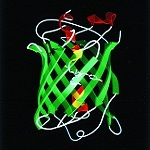
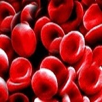

¡Bienvenidos a la página de Bioquímica Metabólica!
En nuestra materia estudiaremos funcionamiento metabólico de las células, los tejidos y el organismo como un todo, la regulación de esos procesos y las patologías asociadas con alteraciones de las diferentes vías metabólicas. Los aprendizajes teóricos tienen aplicación en trabajos prácticos basados en la resolución de problemas y casos clínicos sencillos. La carga horaria se complementa con trabajos prácticos de laboratorio, que les brindarán la posibilidad de adquirir habilidades básicas en técnicas diagnósticas utilizadas de rutina en el laboratorio de análisis clínico. Estas prácticas resultan muy enriquecedoras para comenzar a comprender que la salud de los individuos no depende de un único actor, el médico, sino que se debe trabajar junto con otros profesionales, constituyendo un verdadero equipo de salud, en el que todos sus miembros trabajan de forma complementaria.
Parte de los contenidos la asignatura, tienen relación con los de Microbiología, materia del mismo año y cuatrimestre. Por otro lado, a lo largo de toda la cursada estudiarán fundamentos de nutrición y se aportarán generalidades sobre el funcionamiento génico y del sistema inmune, base para las materias correlativas Genética e Inmunología.
Finalmente, en cuanto al perfil profesional de los médicos egresados de nuestra Facultad, orientado a la formación de médicos generalistas que se desempeñen en el hospital público, Bioquímica Metabólica constituye uno de los pilares en los que se basa el programa del Taller de Integración Vertical, que cursarán al finalizar el tercer año de estudios. Este taller constituye la primera práctica pre-profesional bajo la forma de simulaciones de casos clínicos complejos con pacientes-actores y en la que podrán integrar los aprendizajes construidos durante los tres primeros años de estudio y aplicarlos a situaciones sociales propias de la comunidad en la que está inserta nuestra Universidad.




Plantel Docente:
Prof. Adjunta. Dra. Daniela Ureta
JTP. Bioquímica Mónica Rodrigues
Auxiliares de segunda:
Lucas Castaño
Florencia Cerrudo
Thantesca da Silva Mendonça
Danko Figueroa
Anthony Mantilla Estela